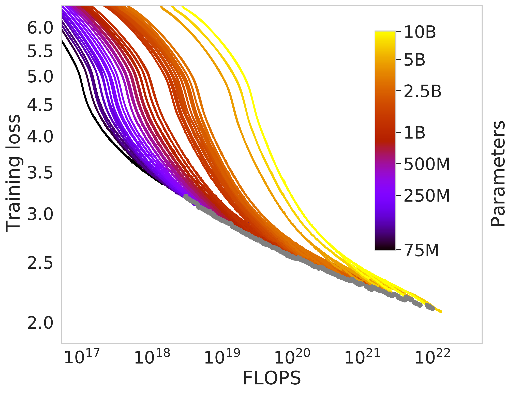
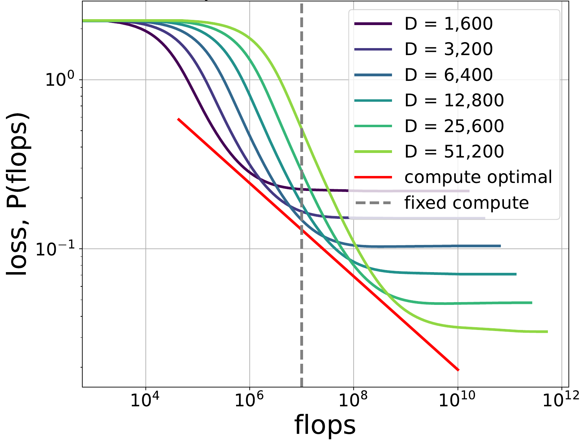
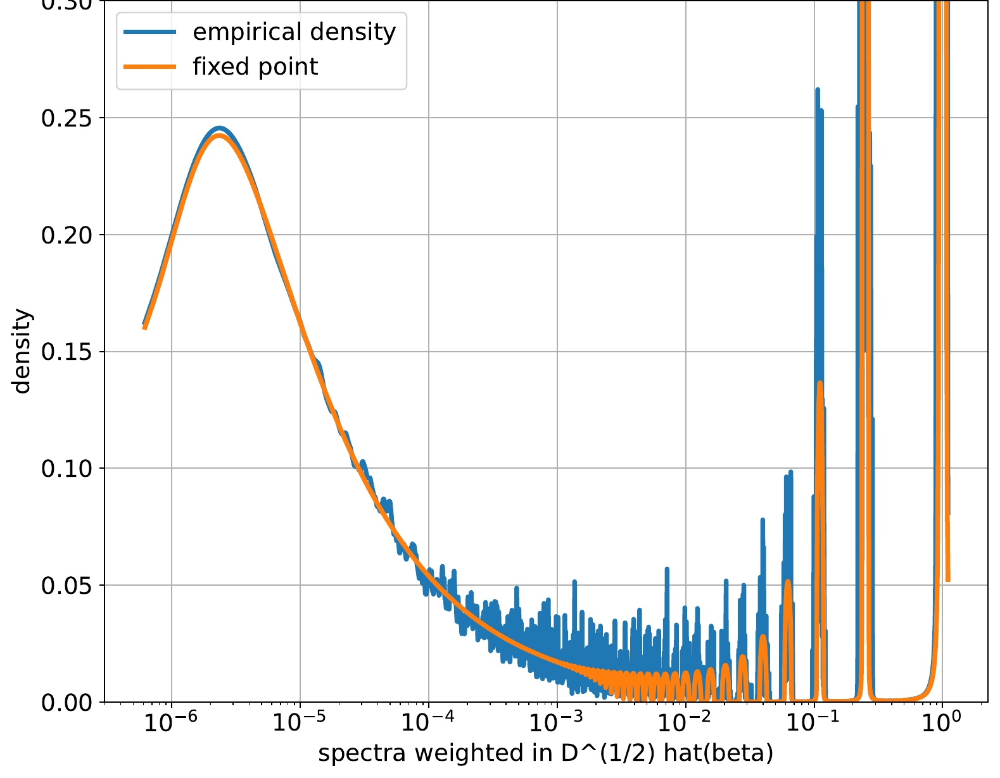
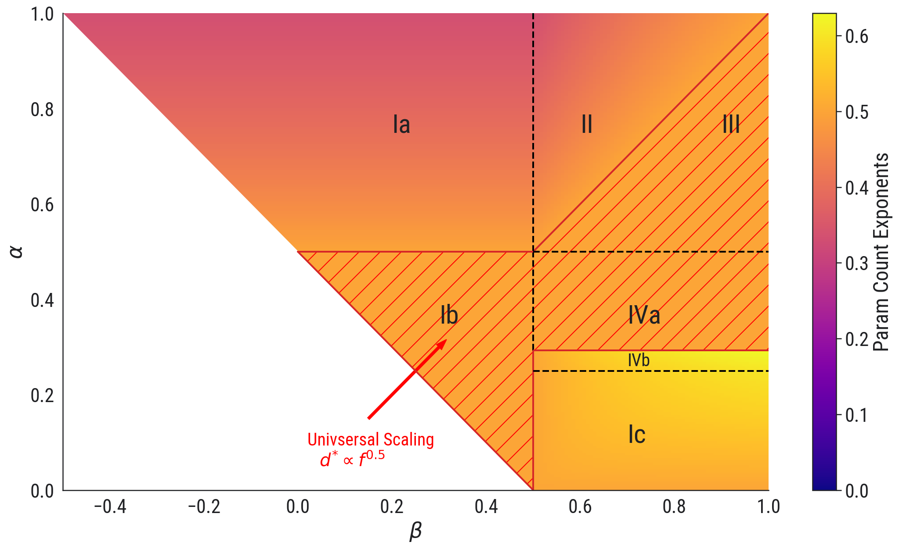
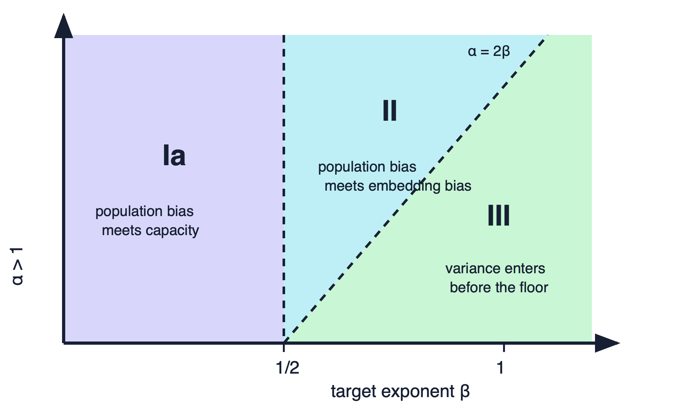
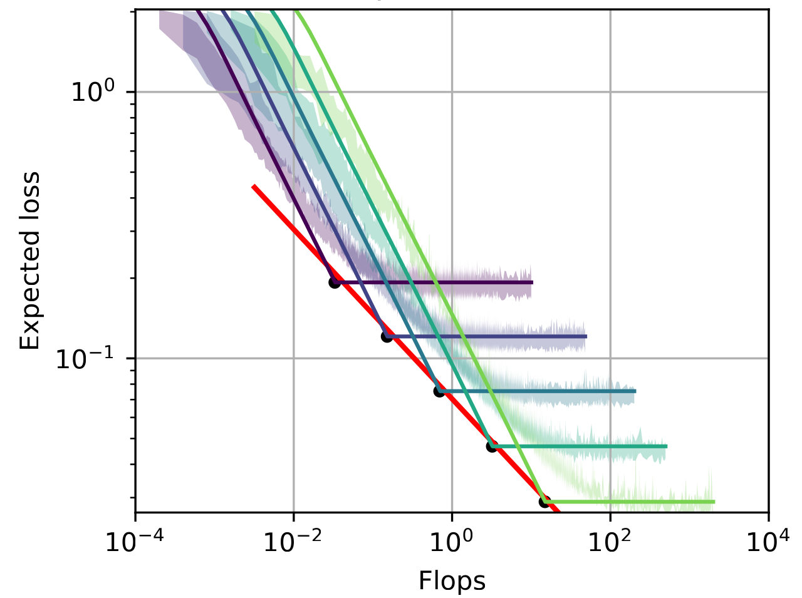
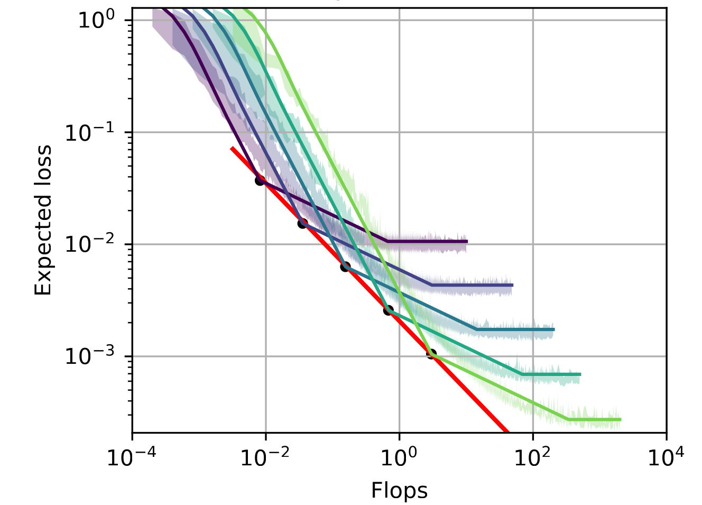
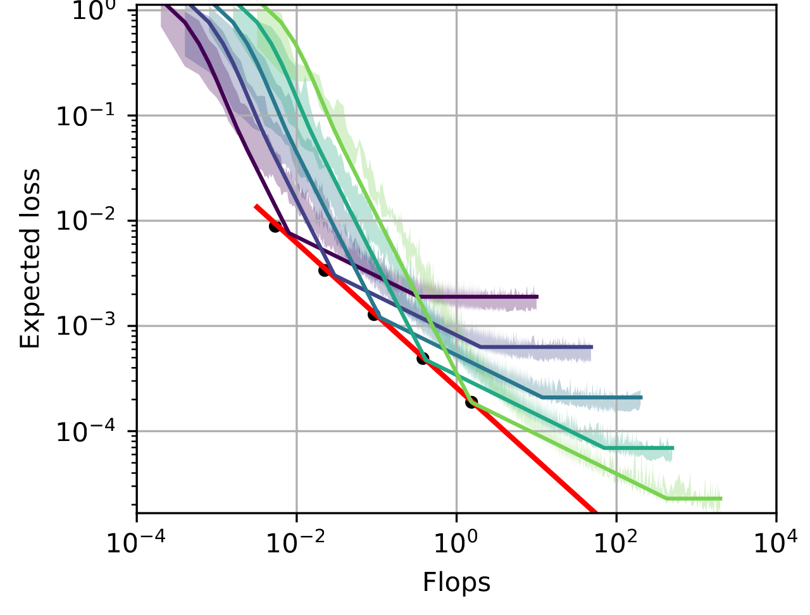

Compute-Optimal Scaling Laws
From spectra to learning curves
Module 1 left us a model for activation covariance
At a fixed layer, let \(X\) denote the random activation vector and
\[ \Sigma=\mathbb E[X\otimes X]. \]
A useful empirical model is a long spectral tail,
\[ \lambda_j(\Sigma)\asymp j^{-\alpha}. \]
This is a linear description of the activations: it says that variance is spread across a hierarchy of directions.
How can this hierarchy influence the loss we can reach with a finite amount of compute?
Fixed compute turns learning into an allocation problem
Suppose a model of size \(d\) is trained for \(r\) steps at batch size \(B\):
\[ \mathsf C\asymp dBr. \]
At fixed \(\mathsf C\), changing model size also changes the number of updates:
\[ r\asymp \frac{\mathsf C}{dB}. \]
For each compute budget, which model size achieves the lowest final loss?
The resulting curve \(\bigl(d_\star(\mathsf C),\mathcal L_\star(\mathsf C)\bigr)\) is the compute-optimal frontier. It will organize the lecture.
Hoffmann et al. recover the frontier from many training runs

What varies
- Models from 70M to 10B parameters
- Four training horizons for each size
- Loss recorded throughout every run
What survives
At each FLOP budget, retain the smallest observed loss. The gray curve is this lower envelope.
Compute optimality is a constrained minimization
Train a model of size \(d\) for \(r\) steps at batch size \(B\):
\[ \mathsf C\asymp dBr, \qquad d_\star(\mathsf C) \in\operatorname*{arg\,min}_d \mathcal L\!\left(\frac{\mathsf C}{dB},d\right). \]
For each compute budget, an IsoFLOP experiment estimates the lower envelope \(\mathcal L_\star(\mathsf C)\) and its minimizing model size.
The allocation law is determined by whichever loss terms are still visible at the optimum.
Square-root allocation is important but not universal
The Chinchilla experiments found an approximately even logarithmic allocation between parameters and training tokens:
\[ d_\star(\mathsf C)\asymp \mathsf C^{1/2}, \qquad r_\star(\mathsf C)\asymp \mathsf C^{1/2}. \]
The exponent \(1/2\) is not forced by \(\mathsf C\asymp dr\). It must arise from the exponents of the competing loss terms.
Our goal is to derive those terms from a covariance model, then ask when their balance produces the square-root law.
Hoffmann et al. (2022); Paquette–Paquette–Xiao–Pennington (2024).
Can a simple covariance model reproduce this frontier?
A solvable regression model lets us analyze the frontier
Let \(Z_j\stackrel{\mathrm{iid}}{\sim}\mathcal N(0,1)\) and define
\[ X_j=j^{-\alpha/2}Z_j, \qquad \Sigma=\mathbb E[X\otimes X] =\operatorname{diag}(j^{-\alpha}). \]
The supervised target is
\[ Y=\langle X,b\rangle, \qquad b_j=j^{-\beta}. \]
Data exponent \(\alpha\)
How quickly variance disappears into the tail.
Target exponent \(\beta\)
How strongly the target uses those tail directions.
The PLRF model mirrors Chinchilla’s lower envelope
Synthetic PLRF

Chinchilla training runs
The gray envelope on the right is the empirical analogue of the red compute-optimal frontier on the left.
Left: course PLRF example, \(\alpha=0.8,\ \beta=0.4\). Right: Hoffmann et al. (2022), Figure 2.
Random features turn ambient structure into model capacity
Use a Gaussian feature map
\[ W\in\mathbb R^{v\times d}, \qquad W_{jk}\stackrel{\mathrm{iid}}{\sim}\mathcal N(0,1/d), \qquad \phi(X)=W^\top X. \]
The predictor \(\widehat Y_\theta=\langle W^\top X,\theta\rangle\) has population loss
\[ \mathcal L(\theta) =\mathbb E[(\widehat Y_\theta-Y)^2] =\left\|\Sigma^{1/2}(W\theta-b)\right\|_2^2. \]
\(d\) is not only a scalar capacity. The random span also distorts the population eigenbasis through which the target is learned.
Fresh mini-batches isolate optimization noise
Fresh batches remove finite-dataset reuse:
\[ \theta_{r+1} =\theta_r-\gamma\,\widehat\nabla\mathcal L_r(\theta_r). \]
| coordinate | role |
|---|---|
| \(\alpha\) | covariance geometry |
| \(\beta\) | target alignment |
| \(d\) | random-feature capacity |
| \((\gamma,B,r)\) | optimization and compute |
The Hessian is a deformed sample covariance
Conditioning on \(W\), the feature-space Hessian is
\[ \widehat K=W^\top\Sigma W. \]
Its nonzero eigenvalues equal those of
\[ H=\Sigma^{1/2}WW^\top\Sigma^{1/2}, \qquad \operatorname{spec}_+(\widehat K)=\operatorname{spec}_+(H). \]
Learning curves use \((I-\gamma\widehat K)^r\) and \((\widehat K-zI)^{-1}\).
The optimizer sees a random sample-covariance resolvent, not \(\Sigma\) directly.
Random matrix lens
Isotropic sample covariance does not converge to the identity
Let \(G\in\mathbb R^{v\times d}\) have iid standard Gaussian entries and set \(H=d^{-1}GG^\top\), with \(v/d\to c\).
Theorem (Marchenko–Pastur). The empirical spectrum of \(H\) converges to a deterministic law supported on
\[ \bigl[(1-\sqrt c)^2,(1+\sqrt c)^2\bigr], \]
with a zero atom when the matrix has a macroscopic nullspace.
The sample spectrum has order-one width even though \(\mathbb E[H]=I\).
A scalar fixed point resolves a deformed spectrum

Course example: \(\alpha=2,\ \beta=2,\ d=1000,\ v=10000\).
The resolvent turns spectral questions into analysis
Write
\[ \Lambda=\operatorname{diag}(\lambda_1,\ldots,\lambda_v), \quad W=d^{-1/2}G, \quad H=\Lambda^{1/2}WW^\top\Lambda^{1/2}, \quad R(z)=(H-zI)^{-1}. \]
For \(\operatorname{Im}z>0\),
\[ \frac1v\operatorname{Tr}R(z) =\frac1v\sum_{\ell=1}^v\frac1{x_\ell-z}. \]
Contour integrals of \(R(z)\) recover spectral densities, projectors, and the training propagators entering the loss.
The matrix derivative is the only calculus we need
Start from
\[ RH=I+zR, \qquad RH=(R\Lambda^{1/2}W)(W^\top\Lambda^{1/2}). \]
For \(W\mapsto W+\varepsilon\Delta\),
\[ \partial_\Delta H =\Lambda^{1/2}(\Delta W^\top+W\Delta^\top)\Lambda^{1/2}, \qquad \boxed{\partial_\Delta R=-R(\partial_\Delta H)R.} \]
The factorization exposes one Gaussian matrix; the directional derivative tracks how the resolvent changes when that matrix moves.
Gaussian integration by parts can be matrix-valued
Let \(\widetilde W\) be an independent copy of \(W\). For a smooth compatible matrix function \(F\),
\[ \boxed{ \mathbb E[F(W)W^\top] = \mathbb E[(\partial_{\widetilde W}F(W))\widetilde W^\top]. } \]
Take \(F(W)=R(W)\Lambda^{1/2}W\), so the exposed product is \(F(W)W^\top\Lambda^{1/2}=RH\). Using \(\partial R=-R(\partial H)R\), the identity becomes
\[ \boxed{ \begin{aligned} \mathbb E[RH] ={}&\mathbb E\!\Big[ R\Lambda^{1/2}\widetilde W\widetilde W^\top\Lambda^{1/2}\\ &\quad- R\Lambda^{1/2} (\widetilde W W^\top+W\widetilde W^\top) \Lambda^{1/2}R\Lambda^{1/2}W \widetilde W^\top\Lambda^{1/2} \Big]. \end{aligned} } \]
Two Wick contractions have different geometry
Condition on \(W\). The purple factors are paired under \(\mathbb E_{\widetilde W}\):
\[ \boxed{ \begin{aligned} \mathbb E[RH] ={}&\mathbb E\!\Big[ R\Lambda^{1/2} {\color{purple}\widetilde W} {\color{purple}\widetilde W^\top} \Lambda^{1/2}\\ &\quad- R\Lambda^{1/2} ({\color{purple}\widetilde W}W^\top +W{\color{purple}\widetilde W^\top}) \Lambda^{1/2}R\Lambda^{1/2}W {\color{purple}\widetilde W^\top} \Lambda^{1/2} \Big]. \end{aligned} } \]
Coherent contraction
\[ \mathbb E_{\widetilde W} [{\color{purple}\widetilde W} A{\color{purple}\widetilde W^\top}] =\frac1d\operatorname{Tr}(A)I. \]
Incoherent contraction
\[ \mathbb E_{\widetilde W} [{\color{purple}\widetilde W^\top} BC{\color{purple}\widetilde W^\top}] =\frac1d C^\top B^\top. \]
The first pairing closes a trace; the second leaves a matrix correction.
The coherent term creates the self-consistent scalar
The two contractions give the exact master equation
\[ \boxed{ \mathbb E[RH] = \mathbb E\!\left[ q_d(z)R\Lambda-\frac1dRHR\Lambda \right], \qquad q_d(z)=1-\frac1d\operatorname{Tr}(RH). } \]
Using \(RH=I+zR\), its \(j\)th diagonal entry is
\[ \mathbb E[ (\lambda_jq_d-z)R_{jj}] =1+\frac{\lambda_j}{d}\mathbb E[(RHR)_{jj}]. \]
The coherent contraction produces \(q_d\); the incoherent contraction is the explicit \(d^{-1}\) correction.
Trace concentration closes the random equation
For fixed \(\operatorname{Im}z>0\),
\[ \|R(z)\|\leq\frac1{\operatorname{Im}z}, \qquad \operatorname{Var}\!\left( \frac1d\operatorname{Tr}(\Lambda R(z)) \right)\longrightarrow0. \]
Drop the explicit \(d^{-1}\) term and factor the concentrated trace:
\[ \boxed{ \mathcal R_{jj}(z) =\frac1{\lambda_jm(z)-z}, \qquad m(z) =\left[ 1+\frac1d\sum_{j=1}^v \frac{\lambda_j}{\lambda_jm(z)-z} \right]^{-1}. } \]
A large random matrix has been replaced by one nonlinear scalar equation.
Dynamics: a scalar Volterra equation
SGD risk satisfies a scalar Volterra equation
Condition on the feature map, let \(Hu_j=\lambda_j u_j\), and write
\[ P_r=\mathbb E[e_r^\top He_r], \qquad q_{0,j}=\mathbb E[\langle e_0,u_j\rangle^2], \qquad a_j=(1-\gamma\lambda_j)^2+\frac{\gamma^2}{B}\lambda_j^2. \]
For Gaussian mini-batches,
\[ \boxed{ \begin{aligned} P_r&=F_r+\sum_{s=0}^{r-1}K_{r-1-s}P_s,\\ F_r&=\sum_j\lambda_ja_j^rq_{0,j}, \qquad K_\ell=\frac{\gamma^2}{B}\sum_j\lambda_j^2a_j^\ell. \end{aligned} } \]
Forcing and kernel separate descent from volatility
Forcing \(F_r\)
- mean-gradient relaxation;
- target overlap with each spectral mode;
- finite-feature approximation error.
Kernel \(K_r\)
- variance injected by a mini-batch;
- propagated through later iterations;
- fed back in proportion to the current loss.
Random matrix theory makes the random \(F\) and \(K\) deterministic. The Volterra equation then propagates those spectral inputs through time.
Stability is collective, not only a top-eigenvalue condition
Mean-square stability
\[ \begin{aligned} \|K\|_1&<1,\\ \|K\|_1&=\frac{\gamma}{B}\sum_i q_i,\\ q_i&=\frac{\lambda_i} {2-\gamma(1+1/B)\lambda_i}. \end{aligned} \]
Collective scale
\[ \begin{aligned} r_{\mathrm{eff}}(H) &=\frac{\operatorname{Tr}(H)}{\|H\|},\\ B_{\mathrm{crit}} &\asymp r_{\mathrm{eff}}(H). \end{aligned} \]
Below \(B_{\mathrm{crit}}\), larger batches permit nearly proportional step-size growth; above it, the gain saturates.
Fixed learning rate. From here on, we take \(\gamma\) to be fixed inside the stable regime.
A heavy-tailed memory kernel has one dominant summand
Lemma (Kesten tail reduction). For a stable, nonnegative subexponential kernel, one large summand dominates a long convolution:
\[ \frac{(K*K)_r}{K_r}\longrightarrow2\|K\|_1. \]
Thus \(P=F+K*F+K^{*2}*F+\cdots\) reduces in the PLRF scaling regime to
\[ \boxed{ \mathscr P_r \asymp \mathscr F_r+\frac1{\gamma B}\mathscr K_r. } \]
Four terms become phases
The relevant spectrum is weighted by the residual
Let \(Hu_\ell=x_\ell u_\ell\) and \(y=\Lambda^{1/2}b\). Define
\[ \boxed{ \widehat\mu_{\mathscr F} = \sum_{\ell=1}^v |\langle u_\ell,y\rangle|^2\,\delta_{x_\ell}. } \]
Then the deterministic descent forcing is
\[ \mathscr F(r) =\int\varphi_r(x)\,\mu_{\mathscr F}(dx), \qquad \varphi_r(x)\approx e^{-2\gamma rx}. \]
An unweighted eigenvalue histogram is insufficient: the target overlaps decide which spectral modes contribute to the loss.
The weighted spectrum splits into peaks and feature bulk
For \(\alpha>1\), \(\beta>1/2\), and mesoscopic \(d^{-\alpha}\ll c\ll1\),
\[ \boxed{ \mu_{\mathscr F}([c,2c]) \asymp \underbrace{ c^{\,1+(2\beta-1)/\alpha} }_{\text{population peaks}} + \underbrace{ \frac1d c^{\,1-1/\alpha} }_{\text{feature bulk}}. } \]
Equivalently, in a sufficiently weak topology that averages over the microscopic peaks,
\[ d\mu_{\mathscr F_{\rm pp}}(x) \asymp x^{(2\beta-1)/\alpha}dx, \qquad d\mu_{\mathscr F_{\rm ac}}(x) \asymp d^{-1}x^{-1/\alpha}dx. \]
Integrating the two spectral pieces gives two biases
Apply the training filter \(e^{-2\gamma rx}\):
\[ \begin{aligned} \mathscr F_{\rm pp}(r) &\asymp \int_0^\infty e^{-2\gamma rx} x^{(2\beta-1)/\alpha}\,dx \asymp r^{-\left(1+(2\beta-1)/\alpha\right)},\\ \mathscr F_{\rm ac}(r,d) &\asymp \frac1d\int_0^\infty e^{-2\gamma rx} x^{-1/\alpha}\,dx \asymp d^{-1}r^{-1+1/\alpha}. \end{aligned} \]
Population bias is ordinary modewise relaxation. Embedding bias is created by the random-feature bulk.
The capacity floor is target mass at the zero atom
\[ \mathscr F_0 =\lim_{\eta\downarrow0} \eta\,y^\top(H+\eta I)^{-1}y, \qquad d=\sum_j\frac{\lambda_j}{\lambda_j+\kappa}. \]
\[ \kappa\asymp d^{-\alpha} \quad\Longrightarrow\quad \text{spectral cutoff at }j\asymp d. \]
Splitting the target energy at \(j\asymp d\) gives
\[ \boxed{ \mathscr F_0(d) \asymp d^{-\alpha+\max\{0,1-2\beta\}}. } \]
The exponent changes at the target threshold \(\beta=1/2\).
Four mechanisms determine the loss curve
Combining the forcing pieces with Kesten’s reduction,
\[ \boxed{ \mathscr P(r,d) \asymp \underbrace{\mathscr F_{\rm pp}(r)}_{\text{population bias}} + \underbrace{\mathscr F_{\rm ac}(r,d)}_{\text{embedding bias}} + \underbrace{\mathscr F_0(d)}_{\text{model capacity}} + \underbrace{\frac1{\gamma B}\mathscr K_{\rm pp}(r)}_{\text{stochastic variance}}. } \]
For \(\alpha>1\),
\[ \mathscr K_{\rm pp}(r)\asymp r^{-2+1/\alpha}. \]
Compute optimality is now a finite competition among four explicit powers.
Each term has a different structural origin
| term | scaling for \(\alpha>1\) | structural meaning |
|---|---|---|
| \(\mathscr F_{\rm pp}\) | \(r^{-[1+(2\beta-1)/\alpha]}\) | population modes relax |
| \(\mathscr F_{\rm ac}\) | \(d^{-1}r^{-1+1/\alpha}\) | random features create a bulk |
| \(\mathscr F_0\) | \(d^{-\alpha+\max(0,1-2\beta)}\) | the feature span misses target mass |
| \(\mathscr K_{\rm pp}\) | \((\gamma B)^{-1}r^{-2+1/\alpha}\) | mini-batches continually inject variance |
No term is universally dominant. The active pair changes with \((\alpha,\beta)\).
A two-term balance sets the compute exponent
\[ \mathscr P(r,d)\asymp r^{-p}+d^{-q}, \qquad \mathsf C\asymp dr. \]
At fixed compute,
\[ \mathsf C^{-p}d^p\asymp d^{-q}. \]
Therefore
\[ \boxed{ \begin{aligned} d_\star(\mathsf C) &\asymp\mathsf C^{p/(p+q)},\\ \mathscr P_\star(\mathsf C) &\asymp\mathsf C^{-pq/(p+q)}. \end{aligned} } \]
The calculation is simple only after identifying the correct active terms.

Red hatching: \(d_\star\asymp\mathsf C^{1/2}\). Source convention: \(\alpha_{\rm paper}=\alpha_{\rm course}/2\). Paquette et al. (2024), Appendix J, Fig. 8(a).
Four active terms produce seven scaling regions

Course convention: \(\lambda_j(\Sigma)\asymp j^{-\alpha}\).
Above the trace-class line, three balances remain

\(\alpha=2\beta\) separates embedding bias from variance-first behavior.
Phase Ia stops at the capacity floor

Course example: \(\alpha=1.2,\ \beta=0.25\).
Phase II exposes embedding bias before the floor

Course example: \(\alpha=1.4,\ \beta=0.60\).
Phase III makes stochastic variance part of the frontier

Course example: \(\alpha=1.6,\ \beta=0.90\).
The deterministic Volterra curve tracks SGD

Source legend \(\alpha_{\rm source}=0.7\) corresponds to course \(\alpha=1.4\).
Selected references
Elliot Paquette, Courtney Paquette, Lechao Xiao, and Jeffrey Pennington. “4+3 Phases of Compute-Optimal Neural Scaling Laws.” NeurIPS 2024. OpenReview
Jordan Hoffmann et al. “Training Compute-Optimal Large Language Models.” NeurIPS 2022. arXiv:2203.15556
Damien Ferbach, Katie Everett, Gauthier Gidel, Elliot Paquette, and Courtney Paquette. “Dimension-adapted Momentum Outscales SGD.” 2025. arXiv:2505.16098
Alexander Maloney, Daniel A. Roberts, and James Sully. “A Solvable Model of Neural Scaling Laws.” 2022. arXiv:2210.16859